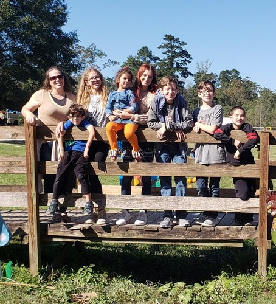
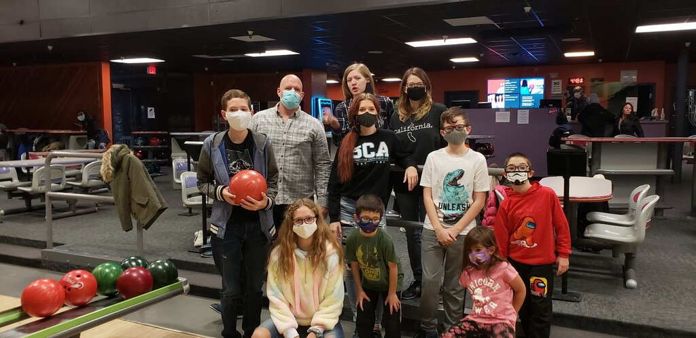
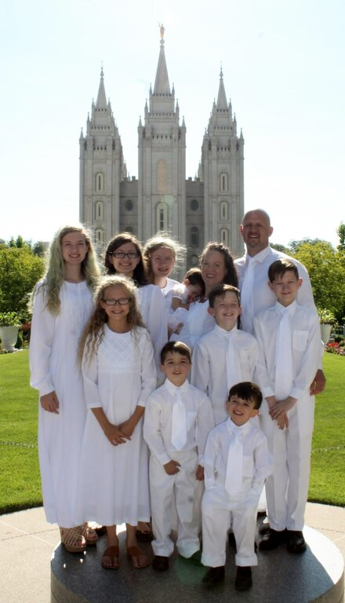
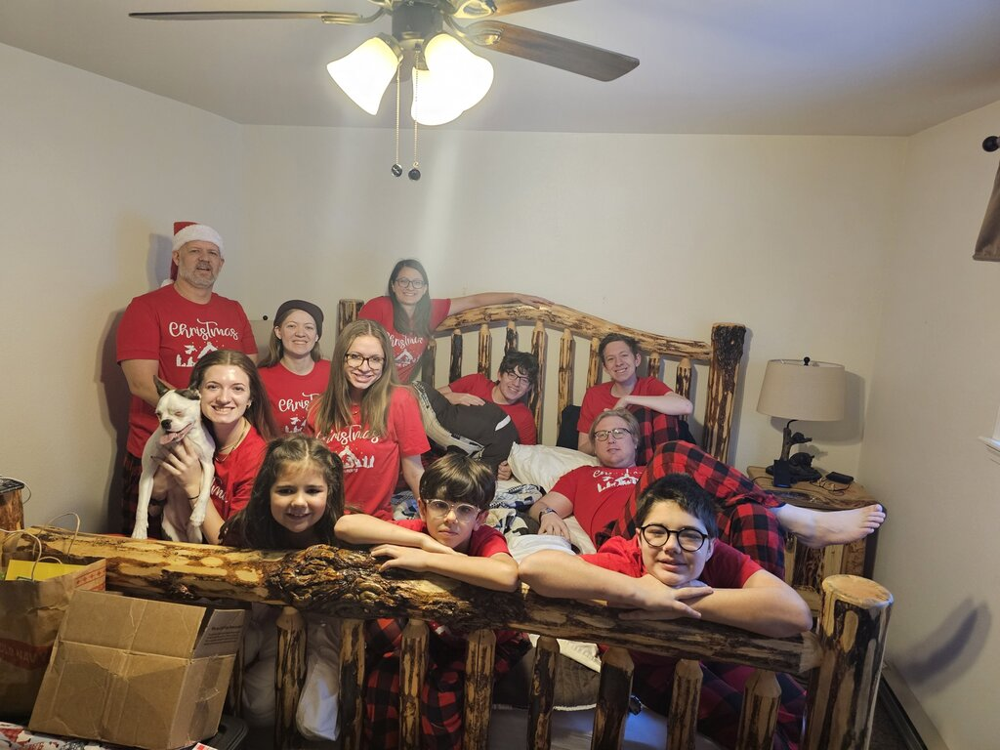
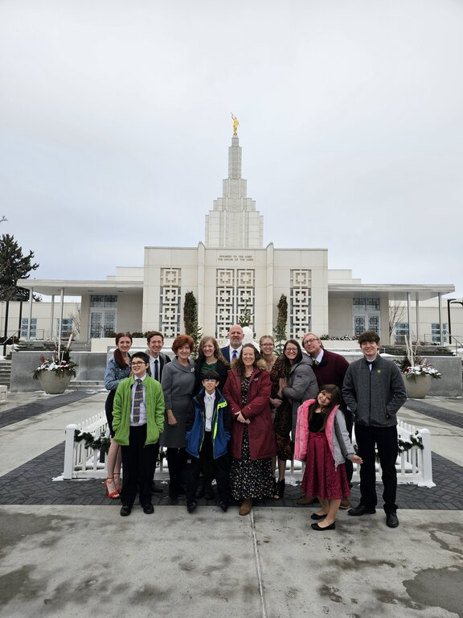

Our Story
In 2015 we had a family council and decided together that we were going to become a Certified family to do Foster Care in Dubuque, Iowa. When I was in fourth grade one of my very best friends Lisa was a foster child. Unfortunately, she had a very bad experience with her foster family and was taken from that home and put in another home. I didn't find out until I went to school that she would not be coming back. I had always thought that someday in the future that I wanted to be a Foster parent. Dad and I took an eight-week course to get us prepared to be certified. We took our classes during the months of October and November and were certified by January with our certification stating that we were a Foster Family with the option to adopt.
Our very first call to take a placement was for two boys about to turn 2 and 4. They came to our home two weeks before their birthdays. We were also told that their Mother was pregnant and we were asked if we would take placement of the baby when it was born. They were unsure of the due date of the baby, but knew it was probably summer time. So, Trevor and Sawyer came to our home just after Easter weekend on March 28, 2016. We were also called a few months after they were placed with us to take another little boy that was 2 years old. He came to stay with us starting on May 16th. At the end of July on the 29th Aliciah was born, and our case worker brought her to our home on August 1, 2016. She was so tiny and just a beautiful little girl with dark brown hair and deep brown eyes. Jordan was able to return home to live with his Mom on November 20th. We have stayed in touch with Jordan's mother and have shared pictures over social media. It was a joy to have Jordan in our home.
We continued to have Trevor, Sawyer, and Aliciah in our home and towards the end of the school year it was looking like their birth parents rights were going to be terminated since they had not worked on anything that the state had asked them to do to show that they were in a better and more stable place to have their children return home. We were able to adopt Trevor, Sawyer, and Aliciah on June 9, 2016 and they made our number of six children turn into nine. Than while we were out on vacation visiting family in Utah, Idaho, and Oregon we were able to go to the Salt Lake City Temple on June 30, 2016 and have them sealed for time and all eternity to our family.
The following October we found out that Trevor, Sawyer, and Aliciah's birth parents had had another son and we were contacted by DHS about taking placement and we said that we would. But by the time he was born and released from the hospital DHS decided to place him with a different family. We felt wronged by DHS and desired to have him be placed with his biological siblings, which was the original plan. The birth parents had also requested for him to be placed with us. Long story short we had lined ourselves up with a lawyer and decided to take DHS to court to try and get him placed with us and his siblings. We were able to get the courts to award us visits with him, so we were able to have him in our home and to spend time with his biological siblings. The courts ended up saying that he needed to stay with the family he was placed with and that it would be up to that family weather or not we continued to have visit between the siblings. The family their little brother was placed with had no intention of keeping in touch or letting our kids bond with their brother. It was a hard ten months while we tried to right the wrong that we felt had taken place. We had to accept that we tried our best and move on.
We were asked to take placement of a 10-month-old boy on August 13, 2017, which we did take placement. It was very hard to say yes to this placement because he was close to the same age of our three sibling that we had just been told by the courts that we would not be getting him placed with us. But we felt that we were to take placement of the little boy, because after all we had gotten into foster care to help our community in a way that we felt that we could. He stayed with us until we found out that we were going to be relocated to Louisiana. We contacted our case worker and let them know and we were asked to take him to stay with another foster couple Jason and Elizabeth Groom. The transition went smoothly, but it was hard to say good bye. We stayed in touch with Jason and Elizabeth and they actually adopted Gregory on December 20, 2019. When we moved to Thibodaux, Louisiana we did not continue with Foster Care. We decided that taking care of our nine was going to be a big job.
